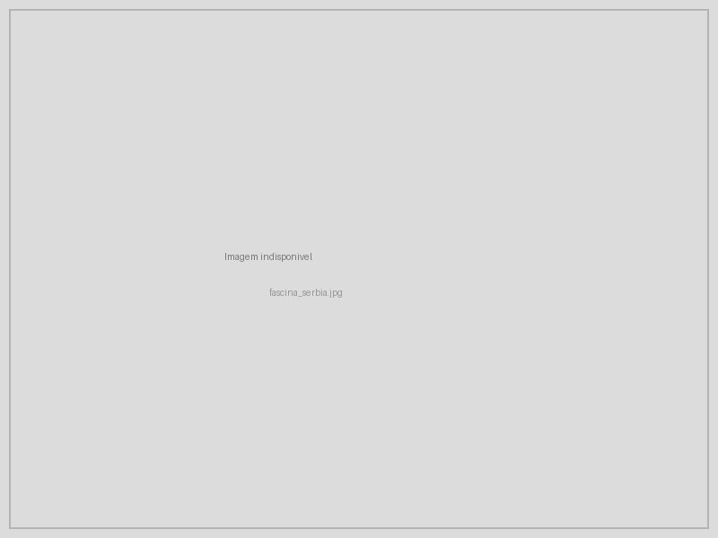
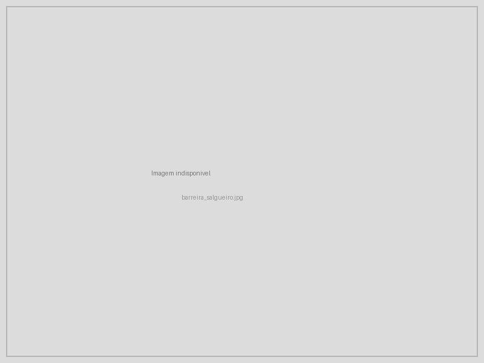
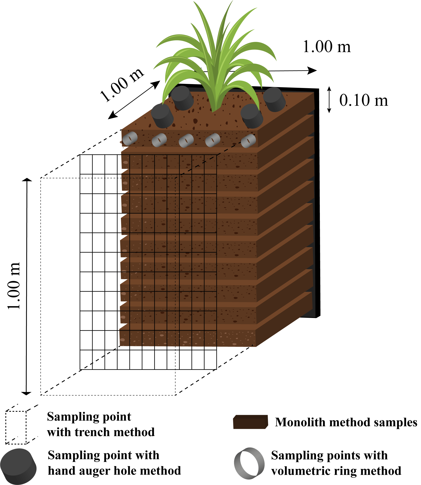

14 Cordões Vegetativos
15 Cordões Vegetativos e Fascinas
15.0.1 Cordões Vegetativos
Os cordões vegetativos são faixas de vegetação densa (1–3 m de largura) dispostas ao longo de curvas de nível em encostas, formando barreiras biológicas contínuas ao escoamento superficial laminar. Diferentemente dos feixes vivos (ver sec-feixes-drenos), que são estruturas construídas com ramos amarrados em valas, os cordões vegetativos são faixas plantadas de espécies perenes que, após o estabelecimento, formam uma barreira viva permanente, autossustentável e de manutenção mínima.
O mecanismo de funcionamento opera em duas escalas. Em escala superficial, a vegetação densa reduz a velocidade do escoamento laminar por aumento da rugosidade hidráulica, promovendo a deposição dos sedimentos transportados a montante do cordão. Ao longo dos anos, essa deposição acumula uma camada de solo que eleva progressivamente o nível do terreno a montante, criando terraços naturais (fenômeno denominado sediment wedge) que suavizam a declividade original da encosta. Em escala subsuperficial, o sistema radicular profundo e denso das espécies utilizadas (particularmente o vetiver, com raízes de até 4 m) aumenta a coesão do solo e a resistência ao cisalhamento, reduzindo a suscetibilidade a deslizamentos rasos. A Figura fig-cordao mostra a construção de um cordão vegetativo por entrelaçamento de ramos, evidenciando a técnica de implantação que combina elementos vivos e mortos para obter barreira funcional desde o primeiro dia.
Técnicas complementares de estabilização biológica são também utilizadas em contextos semelhantes. A Figura fig-fascina apresenta uma cerca de fascina construída com salgueiro, estrutura biodegradável que estabiliza taludes por entrelaçamento de ramos vivos, enquanto a Figura fig-barreira mostra uma barreira de salgueiro em estágio avançado, com as estacas já brotando e formando um cordão vegetativo consolidado.


15.0.2 Espécies
A seleção da espécie é determinante para o sucesso do cordão vegetativo, devendo-se considerar a profundidade e a densidade do sistema radicular, a capacidade de formar barreira densa e impenetrável pelo fluxo, a tolerância a condições edáficas extremas e a facilidade de propagação. A Figura fig-vetiver demonstra o sistema radicular excepcionalmente profundo e denso do vetiver em análise de campo, onde se observam raízes que penetram até 4 m de profundidade, conferindo ancoragem e coesão ao maciço de solo.

A espécie mais utilizada mundialmente para cordões vegetativos é o vetiver (Vetiveria zizanioides), que reúne características excepcionais para a bioengenharia: sistema radicular vertical e profundo (até 4 m), com raízes individuais de resistência à tração de 40–120 MPa (comparável à de aços estruturais de baixa resistência); formação de barreira densa e impenetrável pelo fluxo a partir de 4–6 meses após o plantio; e extrema tolerância a condições adversas, suportando pH de 3 a 11, seca prolongada, encharcamento temporário, salinidade e metais pesados.
Outras opções tropicais incluem o capim-elefante (Pennisetum purpureum), que produz biomassa abundante e pode ser utilizado como forrageira; a cana-de-açúcar em curvas de nível, tradicional em áreas de produção familiar; e a citronela (Cymbopogon nardus), que adiciona a propriedade repelente de insetos.
15.0.3 Dimensionamento
O dimensionamento de cordões vegetativos envolve dois parâmetros principais. O espaçamento vertical entre cordões deve ser de 1–2 m de desnível, com intervalos menores (1 m) em solos de alta erodibilidade e maiores (2 m) em solos mais estáveis. A largura da faixa plantada deve ser de 1–3 m, sendo que faixas mais largas oferecem maior capacidade de filtração e retenção, porém ocupam mais área produtiva. O espaçamento horizontal resultante entre cordões na encosta é determinado pela relação \(E_h = \frac{\Delta h}{S}\), onde \(\Delta h\) é o desnível vertical permitido entre cordões e \(S\) é a declividade local (m/m).
15.0.4 Eficiência
Estudos em condições tropicais demonstram que cordões de vetiver produzem redução de 60–70% na velocidade do escoamento superficial laminar, retenção de 70–90% dos sedimentos grossos (areia e silte grosso) e 40–60% dos sedimentos finos, e formação progressiva de terraços naturais a montante (acúmulo de 5–15 cm de solo/ano nos primeiros 3–5 anos). A eficiência aumenta cumulativamente ao longo do tempo, pois os terraços formados reduzem a declividade efetiva entre cordões.
15.1 Fascinas
15.1.1 Fascinas
As fascinas (fascines) são cilindros de ramos vivos ou mortos rigidamente amarrados, instalados em valas ao longo de curvas de nível ou na base de taludes. Diferem dos feixes vivos descritos na sec-feixes-drenos pela geometria (cilindros compactos), pela aplicação preferencial (base de taludes e margens) e pela maior robustez mecânica.
15.1.2 Tipos
A fascina viva é construída com ramos de espécies com capacidade de rebrota vegetativa (salgueiro, gliricídia, sabiá). Após o enraizamento (30–90 dias em condições favoráveis), transforma-se em uma sebe densa e permanente, tornando-se um cordão vegetativo consolidado.
A fascina inerte é construída com ramos secos ou fibras vegetais sem capacidade de rebrota, desempenhando função exclusivamente mecânica com durabilidade de 1–3 anos, período suficiente para o estabelecimento de vegetação adjacente.
15.1.3 Dimensionamento
Os parâmetros de dimensionamento diferem em função da capacidade de brotação e da necessidade de ancoragem mecânica, conforme sintetizado na Tabela tbl-fascinas.
| Parâmetro | Fascina viva | Fascina inerte |
|---|---|---|
| Diâmetro | 15–30 cm | 20–40 cm (maior, para compensar degradação) |
| Comprimento | 2–4 m | 2–4 m |
| Profundidade de enterrio | 1/2 do diâmetro | 2/3 do diâmetro (maior ancoragem) |
| Fixação | Estacas vivas a cada 1,0 m | Estacas de madeira a cada 0,8 m |
| Durabilidade funcional | Permanente (após brotação) | 1–3 anos |
15.1.4 Instalação
A instalação inicia com a escavação de vala com profundidade igual a metade do diâmetro da fascina (viva) ou dois terços (inerte), seguindo rigorosamente a curva de nível traçada com nível de mangueira ou clinômetro. O cilindro é posicionado na vala e fixado com estacas alternadas entre as faces montante e jusante, criando travamento contra rolamento. Terra é compactada no lado montante e a face é coberta com solo vegetal misturado a sementes de gramíneas.
15.1.5 Aplicações
As fascinas são versáteis, prestando-se à estabilização de bases de taludes (na interface solo-ar), à proteção de margens (submersas na cota de nível d’água), ao controle de ravinas (como micro-barragens transversais, função análoga às paliçadas da sec-palicadas) e à construção de terraços biodegradáveis em substituição aos terraços de terra.
Fascinas vivas + biomantas (ver sec-biomantas) + hidrossemeadura (ver sec-hidrossemeadura) formam um sistema triplamente redundante com proteção em três escalas temporais: proteção imediata pela biomanta (dia 1–180), proteção de médio prazo pela fascina viva enraizando e brotando (mês 3–24), e proteção permanente pela vegetação herbácea e arbustiva consolidada (ano 1 em diante).